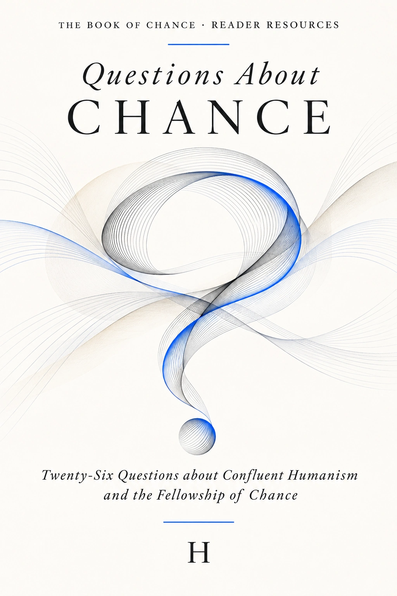

Questions
About Chance
Twenty-six questions about Confluent Humanism and the Fellowship of Chance.
No belief, membership or account is required. Explore the challenging questions as well as the familiar ones. These answers explain a developing philosophy and proposed community, not a guarantee of services.
By H · 26 questions · 5 themes · Free · Revised editorial candidate v0.3

Before the questions
You do not have to agree with Confluent Humanism, identify as spiritual or join a group to read this page. These are answers to questions someone might reasonably ask of a developing philosophy and the community proposed around it. They are explanations of the Fellowship's present working position, not instructions about what you must believe.
What exists now: A growing collection of public writings and reflection resources. What is proposed, not operating: registered membership, a Fellowship Council, local groups, formal mentoring, hardship assistance and collective fundraising or charity draws. Where this FAQ describes future plans, it says so. You should not rely on a proposed programme as though it is currently available.
The questions below are editorially anticipated questions—not statements gathered from actual members or interviews. If the ideas deserve consideration, they also deserve sceptical questions.
An open conversation.
Search the wording of a question or an answer, or browse by theme. Everything is searched locally in your browser; no information is sent or saved.
No account or tracking. Open a question to read its full answer.
Showing all 26 questions
Starting with the basics
4 questionsWhat is Confluent Humanism?
It is a developing philosophical outlook built around a simple tension: much of our life is shaped by conditions we did not choose, yet our choices can still matter. It brings together chance, causes, circumstances, meaningful agency, inherent human dignity and responsibility for the lives we affect. Confluent refers to different paths and influences meeting. Humanism signals a concern for human worth, though its ethical concern also extends to living beings and ecosystems.
Confluent Humanism holds that chance is fundamental and the future is not fully predetermined. That is a philosophical conviction, not an established finding of science. You can engage with its ethical arguments while remaining uncertain about its metaphysical view.
Is the Fellowship of Chance a religion?
The philosophy is Confluent Humanism; the Fellowship of Chance is the proposed community that would explore and practise it. The Fellowship is conceived as philosophical and spiritual, with gatherings and shared reflection when safe arrangements exist. Some people may regard that as religious; others may not. It does not claim revelation from a prophet, a supernatural mechanism of reward, or exclusive knowledge of an afterlife.
People may call this a religion, a spiritual community, or a philosophical fellowship. None of those descriptions means it is legally registered or that its proposed gatherings and leadership already exist. This FAQ does not ask readers to accept a label as proof of what the community will become.
Why is chance central to the philosophy?
Because many parts of life begin or change through circumstances we did not choose: where we are born, whom we meet, which opportunities become visible, and what follows even from careful decisions. Recognising this can encourage humility about success and care in judging another person's hardship.
The word chance has more than one meaning. It can describe uncertainty about what will happen, circumstances outside our control, or the philosophical view that reality is not entirely predetermined. Confluent Humanism holds the last view as a conviction open to criticism, not as a fact proved by the first two meanings. The philosophy asks us to respond to uncertainty with attention, meaningful action and responsibility toward others.
Do I have to believe any of this to read, reflect or disagree?
No. The complete foundational writings remain available to read without payment, registration or a declaration of belief. The website currently offers additional books, letters and reflection resources freely too. Some draft membership plans distinguish public foundational writings from possible future member resources; that access policy has not been adopted. It must be reconciled openly rather than used to withdraw currently public reading without clear notice. You may think the philosophy is partly right, wholly wrong or worth revisiting later.
A future registered Member would be expected to follow agreed conduct and safety rules, not to treat H or every philosophical sentence as beyond challenge. Those membership rules are still proposals and no registration service is being offered by this FAQ.
II. Chance, choice and fairness
Chance, choice and fairness
6 questionsIsn't “chance” simply a word for things we cannot predict?
Sometimes it is. If someone draws a card from a shuffled deck, you may not know which card will come next even though you understand the rules of the deck. That is uncertainty about what we know. We also use chance when talking about events or starting conditions we did not choose, such as the family or place into which we were born.
Confluent Humanism goes further by holding that chance is fundamental and the future is genuinely open. It does not treat the first two everyday uses as proof of the third. A careful reader is free to reject that further claim.
Has physics or science proved that the future is undetermined?
No such proof is claimed here. Scientific explanations of uncertainty and physical randomness are complex, and how they bear on philosophical determinism remains contested. Confluent Humanism adopts an open-future view as a revisable conviction, not as a scientific certification.
Its more everyday claims—for example that preparation, relationships, or changes to access can affect prospects—should be assessed with ordinary evidence in the relevant context. Ethical commitments to dignity and care also require moral reasons; they do not follow automatically from a claim about physics.
If randomness exists, does that give us free will?
Not by itself. A random movement is not automatically a meaningful choice. Confluent Humanism holds that people have meaningful agency while recognising that education, habits, resources, health and other circumstances can constrain their options. How agency relates to causation and fundamental chance is a real philosophical question, not something solved by calling the future “open”.
The practical point is more modest: people make decisions within conditions they did not wholly create, and those decisions can have consequences for themselves and others.
What if I believe everything is determined already?
You can still read and question the material. A deterministic interpretation disagrees with an important metaphysical commitment of Confluent Humanism, and that difference should not be hidden. But a reader who believes events are determined may still find value in asking whether an opportunity is genuinely accessible, whether an action is fair, or how people should help one another.
The books should make room for this disagreement rather than presenting one metaphysical answer as a condition of intellectual honesty or decency.
If luck and starting conditions matter so much, why should anyone make an effort?
Because circumstances matter and actions matter. Learning a skill, asking a question, planning carefully, seeking support or changing an unfair rule can make a real difference. None of these guarantees success, and people begin with unequal time, safety, money and opportunity.
The philosophy resists two extremes: saying people control everything that happens to them, and saying they control nothing worth attempting. It should not become a motivational demand placed on someone who is exhausted, ill, grieving or facing barriers that require collective rather than individual change.
Can we improve our chances in life?
Sometimes, in practical and specific ways. We cannot accumulate a store of luck or persuade chance to favour us. We can sometimes improve our prospects by gaining reliable information, practising a skill, building a supportive relationship, making opportunities more accessible or reducing an avoidable risk. Those changes can matter without guaranteeing the outcome we hope for. Structural barriers may also require collective action, not merely personal effort.
A helpful test is to ask: What condition could actually change? “Believe harder” is not a practical answer to that question.
III. Values and everyday practice
Values and everyday practice
4 questionsWhat are the five values? Is one more important than the others?
Hope, Acceptance, Reflection, Growth and Community. Hope leaves room for future possibility without promises. Acceptance recognises reality without endorsing every injustice. Reflection examines what happened and what can be learned. Growth includes understanding and change, not only visible achievement. Community recognises that lives are connected, and that receiving support is as legitimate as offering it.
They are complementary, not ranked. Reflection connects them but does not sit above the others. A person may need rest more than growth, honest acceptance more than optimism, or companionship more than advice.
Doesn't “acceptance” just encourage people to put up with injustice?
It should do the opposite of denial. To accept that a barrier exists is to describe it accurately; it is not to say the barrier is good, deserved or permanent. Someone excluded by an inaccessible entrance needs the condition acknowledged before it can be changed.
Acceptance can coexist with protest, anger, repair and organised efforts to improve the situation. It can also mean respecting a person's decision not to fight every battle at once. No value requires someone to exhaust themselves proving that they care.
What is the Reflection of Chance? Must I write or share it?
It is an optional practice of considering the circumstances that shaped an experience, the choices made within them, what may have been learned, and what could become possible next. Reflection might be a private note, a conversation, a moment of silence or nothing at all on a difficult day.
There is no required daily streak, record, testimony or public confession. Personal reflections remain yours. The philosophy does not treat constant self-analysis as a virtue, and reflection should be set aside when it becomes unhelpful or distressing.
What is an Act of Possibility? Must it involve money or volunteering?
It is a voluntary, manageable action intended to widen another person's options or care for the living world. It might be checking whether an introduction is wanted, sharing reliable information, fixing a confusing instruction, contributing to an appropriate project or making space for someone to be heard. Sometimes the responsible act is to decline an unsafe request, receive help or rest.
An act is not a transaction with the universe. It does not buy luck or earn points toward human worth. Ask before intervening in someone else's life, respect refusal, and do not give what you cannot reasonably spare.
IV. Faith, meaning and the unknown
Faith, meaning and the unknown
4 questionsCan I remain Christian, Muslim, Buddhist, Hindu, atheist or uncertain?
The Fellowship's intended approach is open to people with existing religious commitments, secular views and unresolved questions. Someone may pray within their own tradition, meditate or prefer no spiritual language. No one is asked to abandon a faith to read these books.
That does not mean the Fellowship can declare all traditions philosophically compatible with Confluent Humanism. Some teachings may conflict, including its view of the open future. Readers are entitled to notice and discuss those differences honestly.
Will prayer, good deeds or positive thinking change my luck?
The Fellowship does not claim they alter the odds of unrelated events. Prayer may be a meaningful expression of hope within someone's faith. Reflection may change what a person notices or decides. A generous act may materially help another person. None is a verified way to command chance, and none promises a reward to the giver.
If someone says you must pray, donate or obey H to avoid bad fortune, they are contradicting the Fellowship's stated commitments.
Why use words like “blessing” or “sacred” if chance is not a god?
A blessing of chance can be a poetic expression of gratitude for something fortunate, not a claim that a conscious force chose a winner. Sacred may express the importance someone attaches to existence, relationships or life itself without making an empirical claim about supernatural causes.
Readers are free to find that language meaningful, misleading or unnecessary. The important boundary is that metaphor should not turn into a hidden promise that fortune favours the loyal or punishes the unlucky.
Does Confluent Humanism teach an afterlife?
No specific account of what follows death is presented as known. People may retain religious, spiritual or secular beliefs, and they need not pretend that all views have equal evidential support. The uncertainty surrounding death can invite care for the present without making grief into a compulsory lesson.
A person who is bereaved should not be told that loss was meant to happen, that it will improve their character, or that the Fellowship knows what their loved one now experiences.
V. The Fellowship, trust and participation
The Fellowship, trust and participation
8 questionsIs the Fellowship already operating? Can I join today?
The public literature and website resources exist. A registered Fellowship, governing Council, recognised Local Fellowships, formal mentoring and hardship-assistance programmes are not yet operating under these draft documents. Reading the site or joining an optional interest list, if offered, is not the same as becoming a Member and does not confer access to services.
The planned membership model is free and initially intended for adults. Before any membership opens, clear governance, privacy, moderation, safety and complaint arrangements must actually exist. This FAQ is not an application form or an offer of services.
Who is H, and why is the author pseudonymous?
H is the public byline of the founding steward who writes and curates the initial material with AI assistance. A pseudonym keeps the author’s face and personal identity from becoming the centre of the project. Neither the byline nor AI-generated narration gives H special knowledge, infallibility or permission to evade criticism.
Crucially, public anonymity is not immunity from scrutiny. Before anyone—including H—controls community decisions, money, complaints or access to members, meaningful independent oversight and appropriate identity/accountability arrangements must be implemented. Those arrangements are not claimed to exist today.
What if I disagree with H or think one of the books is wrong?
Disagreement is welcome. The writings are open to criticism, correction and argument. Their status is not that of commands that only H may interpret. Future members should also be able to criticise leaders and leave without retaliation, subject to fair rules against harassment and misuse of private information.
A community that says it values reflection must be able to recognise error in its own materials. A change to an important published position should be explained with a dated revision record, not silently presented as though it were always there.
How would leadership and complaints be kept accountable?
The proposed Fellowship Council would oversee shared principles, resources and organisational risks; recognised Local Fellowships would eventually have appropriate local responsibilities. The founding documents call for governance that becomes more representative, transparent accounting, safeguards against conflicts of interest, and complaint routes independent of a leader accused of wrongdoing. The first Council would be appointed in part by H, so independence cannot be assumed merely because a proposed panel is called “independent”.
These are requirements for a future organisation, not current functioning services. No reader should be directed to an imaginary complaints panel. Where there is an immediate threat, suspected abuse or another serious matter, appropriate existing external services or authorities—not an unlaunched Fellowship process—must be used.
Can children read the books? What about privacy and participation?
The public writings can be read and questioned by people of different ages. The initial proposed registered community is for adults aged 18 and over. Organised activities involving children would require separate safeguarding and appropriate supervision and are not part of the initial adult programme.
No one must disclose private reflections, medical history or financial hardship in public to participate in the philosophy. If a future member programme is established, its handling of names, personal information and sensitive requests must be explained and protected before people are invited to share it. The current draft expects registered Members to use their real names inside controlled member spaces, not to publish those names openly.
Does membership cost money? Can donations buy special status?
The proposed ordinary Member tier would be free. Donations would be voluntary and could not buy luck, votes, priority in receiving assistance, exemption from rules or greater human worth. The founding model also proposes Senior Member recognition for sustained practical service and an affordable pattern of contribution, ordinarily after at least twelve months. It includes a proposed confidential exception when the affordable amount is zero; a large gift alone must never confer seniority.
These seniority rules remain unimplemented and require fair, reviewable procedures. The financial-participation element is a genuine proposal worth questioning; any hardship exception would need to work in practice, not just on paper. Ordinary Members would retain their basic rights, including eligible local votes and access to assistance under the same need-related criteria. Seniority should recognise service, not turn the Fellowship into a paid hierarchy or a test of wealth.
Will money be distributed by random drawings?
An early idea was to select an external charity by a random draw from a pre-vetted eligible group. That is a deferred possibility, not an active campaign or approved fundraising plan. If ever adopted, it would need transparent eligibility, an auditable method, legal review and evidence of where funds went.
Support for Members facing hardship would never be awarded by lottery. Any future assistance must be need-related, carefully governed, confidential and within real resources. No public appeal for donations should imply that a draw or hardship fund is operating now.
Will the Fellowship offer mentoring, community projects or hardship support?
Those are the three selected first-year development priorities: mentorship and personal guidance, collaborative community projects, and practical support for Members facing hardship. They are plans, not current entitlements or services. The intended first step for hardship support is bounded non-financial help such as listening, consent-based introductions and signposting—only when safe staffing and privacy arrangements exist. Financial or material help would require separate governance and controls.
A future Fellowship must say plainly what it can do, what it cannot do, and when someone should seek qualified or urgent assistance elsewhere. Wanting to help is not a substitute for being competent and safe.
No questions match your search. Try a different word or select All questions.
Where can I read further?
If you are new, begin with A Beginner's Guide to Confluent Humanism for a short explanation, then The Book of Chance for the full philosophical argument. The Five Values explores the five values in depth; The Little Book of Possibilities considers what makes opportunities genuinely available. For questions to explore alone or with others, try Conversations of Chance. For fiction, read The Parables of Chance, and for individual ethical arguments, see Letters from H.
The books and supplementary resources are collected in the online Library. Some editions are still labelled editorial candidates. Reading them never requires agreement, registration or payment.
A further question is welcome. If this FAQ gets something wrong, leaves out an important objection or describes a plan that later changes, it should be corrected openly and the edition dated. No fictional “reader question” should be presented as though it came from an actual person.
Through chance, we meet. Through choice, we grow. Together, we create possibility.
— H
This is an editorial candidate, not a statement that the proposed Council, membership or support programmes exist. The cover is a concept pending final approval; independent human reading, accessibility and live checks remain outstanding.